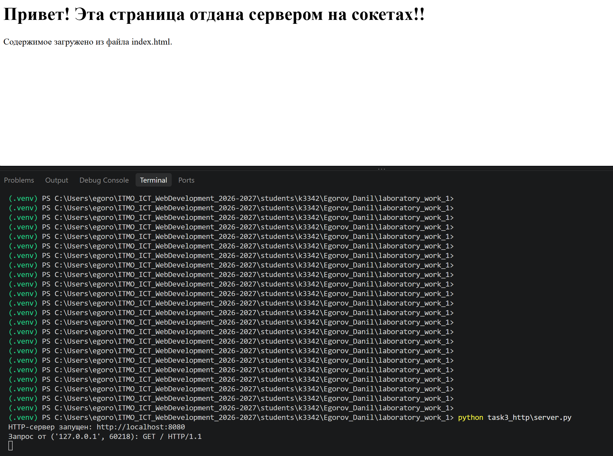
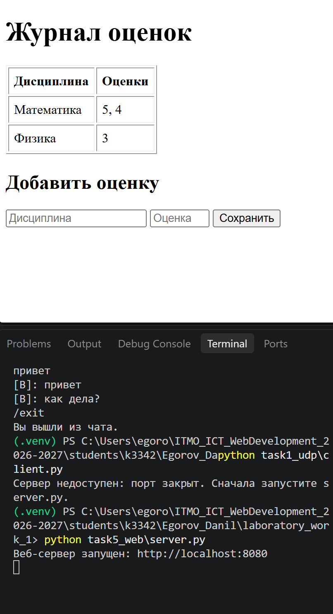

ЛР1. Работа с сокетами
Студент: Егоров Данил, группа k3342 Вариант (задание 2): 1 — Теорема Пифагора (9-й номер в журнале: ((9 − 1) mod 4) + 1 = 1)
Цель работы
Понять принципы межсокетного взаимодействия в вебе и научиться реализовывать базовую архитектуру клиент-сервер.
Общая архитектура
Во всех заданиях используется стандартная библиотека socket. Сервер работает на localhost:8080, текст передаётся в кодировке UTF-8. Код работы лежит в папке students/k3342/Egorov_Danil/laboratory_work_1/.
| Задание | Протокол | Тип сокета | Ключевые вызовы |
|---|---|---|---|
| 1. Обмен сообщениями | UDP | SOCK_DGRAM |
sendto(), recvfrom() |
| 2. Вычисления | TCP | SOCK_STREAM |
listen(), accept(), connect() |
| 3. Раздача HTML | HTTP поверх TCP | SOCK_STREAM |
accept(), recv(), sendall() |
| 4. Чат | TCP + потоки | SOCK_STREAM |
accept(), threading.Thread |
| 5. Веб-сервер GET/POST | HTTP поверх TCP | SOCK_STREAM |
разбор запроса вручную |
UDP и TCP
UDP не устанавливает соединение и не гарантирует доставку и порядок пакетов, зато прост и быстр. TCP сначала устанавливает соединение (connect() на клиенте, accept() на сервере) и гарантирует доставку и порядок байт.
Задание 1. Обмен сообщениями по UDP
Протокол
| Направление | Данные |
|---|---|
| клиент → сервер | датаграмма с текстом Hello, server |
| сервер → клиент | датаграмма с текстом Hello, client |
Сервер создаёт UDP-сокет, делает bind() и ждёт датаграмму в recvfrom(). Этот вызов возвращает и данные, и адрес отправителя, по которому сервер отправляет ответ через sendto(). У клиента стоит таймаут 5 секунд, потому что UDP не гарантирует доставку.
Код сервера (task1_udp/server.py)
import socket
HOST, PORT = "localhost", 8080
server_socket = socket.socket(socket.AF_INET, socket.SOCK_DGRAM)
server_socket.bind((HOST, PORT))
print(f"UDP-сервер запущен на {HOST}:{PORT}, жду сообщение...")
data, client_address = server_socket.recvfrom(1024)
print(f"Сообщение от клиента {client_address}: {data.decode('utf-8')}")
server_socket.sendto("Hello, client".encode("utf-8"), client_address)
server_socket.close()
Код клиента (task1_udp/client.py)
import socket
SERVER = ("localhost", 8080)
client_socket = socket.socket(socket.AF_INET, socket.SOCK_DGRAM)
client_socket.settimeout(5)
client_socket.sendto("Hello, server".encode("utf-8"), SERVER)
try:
data, _ = client_socket.recvfrom(1024)
print(f"Ответ от сервера: {data.decode('utf-8')}")
except socket.timeout:
print("Сервер не ответил за 5 секунд (запущен ли server.py?)")
except ConnectionResetError:
print("Сервер недоступен: порт закрыт. Сначала запустите server.py.")
finally:
client_socket.close()
Пример работы
$ python server.py
UDP-сервер запущен на localhost:8080, жду сообщение...
Сообщение от клиента ('127.0.0.1', 41630): Hello, server
$ python client.py
Ответ от сервера: Hello, client
Задание 2. Вычисления через TCP
Операция: теорема Пифагора — вычисление гипотенузы по двум катетам
Формула: c = √(a² + b²), где a и b — катеты, c — гипотенуза
Протокол
| Направление | Формат | Пример |
|---|---|---|
| клиент → сервер | числа-параметры через пробел, одна строка | 3 4 |
| сервер → клиент | строка с результатом | Гипотенуза c = 5 |
| сервер → клиент (ошибка) | строка Ошибка: <причина> |
Ошибка: нужно 2 числа, получено 1 |
Клиент запрашивает параметры с клавиатуры и проверяет, что введены числа (запятая заменяется на точку). Сервер разбирает строку, проверяет количество и допустимость параметров (длины катетов должны быть положительными), считает результат и отправляет его клиенту. После ответа соединение закрывается.
Код сервера (task2_tcp/server.py)
import math
import socket
HOST, PORT = "localhost", 8080
def pythagoras(a, b):
"""Теорема Пифагора: по катетам a и b находит гипотенузу c."""
if a <= 0 or b <= 0:
raise ValueError("катеты должны быть положительными")
return f"Гипотенуза c = {math.hypot(a, b):g}"
def process(request: str) -> str:
try:
values = [float(x.replace(",", ".")) for x in request.split()]
if len(values) != 2:
return f"Ошибка: нужно 2 числа, получено {len(values)}"
return pythagoras(*values)
except ValueError as e:
return f"Ошибка: {e}"
server_socket = socket.socket(socket.AF_INET, socket.SOCK_STREAM)
server_socket.setsockopt(socket.SOL_SOCKET, socket.SO_REUSEADDR, 1)
server_socket.bind((HOST, PORT))
server_socket.listen(5)
print(f"TCP-сервер запущен на {HOST}:{PORT}...")
while True:
conn, addr = server_socket.accept()
print(f"Подключение от {addr}")
request = conn.recv(1024).decode("utf-8")
print(f"Параметры: {request}")
response = process(request)
print(f"Результат: {response}")
conn.sendall(response.encode("utf-8"))
conn.close()
Код клиента (task2_tcp/client.py)
import socket
HOST, PORT = "localhost", 8080
def read_number(prompt):
"""Запрашивает число с клавиатуры, пока не будет введено корректное."""
while True:
text = input(prompt).strip().replace(",", ".")
try:
float(text)
return text
except ValueError:
print("Нужно ввести число, повторите.")
print("Теорема Пифагора")
a = read_number("Введите катет a: ")
b = read_number("Введите катет b: ")
client_socket = socket.socket(socket.AF_INET, socket.SOCK_STREAM)
client_socket.connect((HOST, PORT))
client_socket.sendall(f"{a} {b}".encode("utf-8"))
print("Ответ сервера:", client_socket.recv(1024).decode("utf-8"))
client_socket.close()
Пример работы
$ python server.py
TCP-сервер запущен на localhost:8080...
Подключение от ('127.0.0.1', 54790)
Параметры: 3 4
Результат: Гипотенуза c = 5
$ python client.py
Теорема Пифагора
Введите катет a: 3
Введите катет b: 4
Ответ сервера: Гипотенуза c = 5
Задание 3. Раздача HTML-страницы по HTTP
Протокол
HTTP-ответ — это текст строгого формата:
HTTP/1.1 200 OK\r\n
Content-Type: text/html; charset=UTF-8\r\n
Content-Length: <длина тела в байтах>\r\n
Connection: close\r\n
\r\n
<содержимое index.html>
Сервер читает файл index.html, считает длину тела и отправляет ответ через тот же сокет, который принял подключение.
Content-Length считается в байтах
В UTF-8 русская буква занимает 2 байта, поэтому длину нужно считать по байтам (len(body) для bytes), а не по символам строки. Иначе браузер получит неверную длину.
Код сервера (task3_http/server.py)
import os
import socket
HOST, PORT = "localhost", 8080
INDEX_PATH = os.path.join(os.path.dirname(os.path.abspath(__file__)), "index.html")
def build_response(status: str, body: bytes) -> bytes:
headers = (
f"HTTP/1.1 {status}\r\n"
"Content-Type: text/html; charset=UTF-8\r\n"
f"Content-Length: {len(body)}\r\n"
"Connection: close\r\n"
"\r\n"
)
return headers.encode("utf-8") + body
server_socket = socket.socket(socket.AF_INET, socket.SOCK_STREAM)
server_socket.setsockopt(socket.SOL_SOCKET, socket.SO_REUSEADDR, 1)
server_socket.bind((HOST, PORT))
server_socket.listen(5)
print(f"HTTP-сервер запущен: http://{HOST}:{PORT}")
while True:
conn, addr = server_socket.accept()
request = conn.recv(4096).decode("utf-8", errors="replace")
first_line = request.splitlines()[0] if request else "(пусто)"
print(f"Запрос от {addr}: {first_line}")
try:
with open(INDEX_PATH, "rb") as f:
response = build_response("200 OK", f.read())
except FileNotFoundError:
response = build_response("404 Not Found", "<h1>index.html не найден</h1>".encode("utf-8"))
conn.sendall(response)
conn.close()
Страница (task3_http/index.html)
<!DOCTYPE html>
<html lang="ru">
<head>
<meta charset="UTF-8">
<title>ЛР1. Задание 3</title>
</head>
<body>
<h1>Привет! Эта страница отдана сервером на сокетах!!</h1>
<p>Содержимое загружено из файла index.html.</p>
</body>
</html>
Пример работы
$ python server.py
HTTP-сервер запущен: http://localhost:8080
Запрос от ('127.0.0.1', 52742): GET / HTTP/1.1

Задание 4. Многопользовательский чат (TCP)
Протокол
Текстовый, построчный (каждое сообщение заканчивается \n):
| Кто | Что | Описание |
|---|---|---|
| сервер → клиент | Введите ваш ник: |
приглашение сразу после подключения |
| клиент → сервер | <ник> |
первое сообщение — ник; он должен быть уникальным, не пустым и не начинаться с / |
| клиент → сервер | <текст> |
обычное сообщение |
| клиент → сервер | /exit |
выход из чата |
| сервер → клиенты | [ник]: текст |
рассылка сообщения всем, кроме отправителя |
| сервер → клиенты | *** ник вошёл в чат *** / *** ник покинул чат *** |
служебные уведомления |
Как устроено
- Сервер в цикле вызывает
accept()и для каждого подключения запускает отдельный потокthreading.Thread. - Активные пользователи хранятся в словаре
ник → сокет. Доступ к нему защищёнthreading.Lock, потому что словарь меняют разные потоки одновременно. - Идентификация — ник, который клиент вводит при запуске. Клиентский скрипт один и тот же для всех: его запускают в нескольких терминалах, а личность пользователя определяется вводом, а не кодом.
- В клиенте отдельный поток принимает сообщения, пока основной поток ждёт ввод пользователя. Так сообщения приходят, даже когда пользователь ничего не печатает.
Код сервера (task4_chat/server.py)
import socket
import threading
HOST, PORT = "localhost", 8080
clients = {}
clients_lock = threading.Lock()
def send_line(conn, text):
try:
conn.sendall((text + "\n").encode("utf-8"))
except OSError:
pass
def broadcast(text, exclude=None):
"""Разослать сообщение всем, кроме exclude (отправителя)."""
with clients_lock:
targets = [c for nick, c in clients.items() if nick != exclude]
for c in targets:
send_line(c, text)
def handle_client(conn, addr):
nickname = None
try:
reader = conn.makefile("r", encoding="utf-8")
send_line(conn, "Введите ваш ник:")
while True:
line = reader.readline()
if not line:
return
nick = line.strip()
with clients_lock:
if nick and not nick.startswith("/") and nick not in clients:
clients[nick] = conn
nickname = nick
break
send_line(conn, "Ник пустой, начинается с '/' или уже занят. Другой ник:")
print(f"{nickname} подключился ({addr})")
send_line(conn, f"Добро пожаловать, {nickname}! Для выхода введите /exit")
broadcast(f"*** {nickname} вошёл в чат ***", exclude=nickname)
for line in reader:
text = line.strip()
if text == "/exit":
break
if text:
broadcast(f"[{nickname}]: {text}", exclude=nickname)
except (ConnectionError, OSError):
pass
finally:
if nickname:
with clients_lock:
clients.pop(nickname, None)
broadcast(f"*** {nickname} покинул чат ***")
print(f"{nickname} отключился")
conn.close()
server_socket = socket.socket(socket.AF_INET, socket.SOCK_STREAM)
server_socket.setsockopt(socket.SOL_SOCKET, socket.SO_REUSEADDR, 1)
server_socket.bind((HOST, PORT))
server_socket.listen()
print(f"Чат-сервер запущен на {HOST}:{PORT}")
try:
while True:
conn, addr = server_socket.accept()
threading.Thread(target=handle_client, args=(conn, addr), daemon=True).start()
except KeyboardInterrupt:
print("\nСервер остановлен")
finally:
server_socket.close()
Код клиента (task4_chat/client.py)
import socket
import threading
HOST, PORT = "localhost", 8080
stop = threading.Event()
def receive(reader):
"""Отдельный поток: печатает всё, что присылает сервер."""
for line in reader:
print(line.rstrip("\n"))
print("Соединение с сервером закрыто. Нажмите Enter для выхода.")
stop.set()
client_socket = socket.socket(socket.AF_INET, socket.SOCK_STREAM)
try:
client_socket.connect((HOST, PORT))
except ConnectionRefusedError:
print("Не удалось подключиться: сервер не запущен.")
raise SystemExit(1)
reader = client_socket.makefile("r", encoding="utf-8")
threading.Thread(target=receive, args=(reader,), daemon=True).start()
try:
while not stop.is_set():
text = input()
if stop.is_set():
break
client_socket.sendall((text + "\n").encode("utf-8"))
if text.strip() == "/exit":
break
except (EOFError, KeyboardInterrupt):
try:
client_socket.sendall(b"/exit\n")
except OSError:
pass
finally:
client_socket.close()
print("Вы вышли из чата.")
Пример работы
# терминал сервера
Чат-сервер запущен на localhost:8080
Alice подключился (('127.0.0.1', 52810))
Bob подключился (('127.0.0.1', 52796))
Alice отключился
Bob отключился
# терминал Alice
Введите ваш ник:
Alice
Добро пожаловать, Alice! Для выхода введите /exit
*** Bob вошёл в чат ***
привет всем
[Bob]: привет, Alice
/exit
Вы вышли из чата.
# терминал Bob
Введите ваш ник:
Bob
Добро пожаловать, Bob! Для выхода введите /exit
[Alice]: привет всем
привет, Alice
*** Alice покинул чат ***
/exit
Вы вышли из чата.
Задание 5. Простой веб-сервер (GET/POST)
Протокол
| Запрос | Что делает сервер | Ответ |
|---|---|---|
GET / |
собирает HTML-страницу со всеми оценками и формой | 200 OK |
POST / с телом discipline=...&grade=... |
сохраняет оценку | 303 See Other, Location: / |
POST / с некорректными данными |
ничего не сохраняет | 400 Bad Request |
| любой другой путь | 404 Not Found |
|
| другой метод | 405 Method Not Allowed |
Запрос разбирается вручную: из первой строки берутся метод и путь, из заголовка Content-Length — длина тела POST. Тело дочитывается до нужной длины, потому что оно может прийти отдельным пакетом. Поля формы разбираются через urllib.parse.parse_qs. Пользовательский текст при выводе экранируется html.escape.
Структура данных
Оценки хранятся в словаре, где ключ — дисциплина, а значение — список оценок:
grades = {
"Математика": [5, 4],
"Физика": [3],
}
Так по каждому предмету получается одна запись со списком оценок, а не отдельная строка на каждую оценку. Новая оценка добавляется через grades.setdefault(subject, []).append(grade): запись создаётся при первой оценке, а дальше только дополняется.
Код сервера (task5_web/server.py)
import html
import socket
from urllib.parse import parse_qs
HOST, PORT = "localhost", 8080
grades = {}
def build_response(status: str, body: str = "", extra_headers: str = "") -> bytes:
body_bytes = body.encode("utf-8")
headers = (
f"HTTP/1.1 {status}\r\n"
"Content-Type: text/html; charset=UTF-8\r\n"
f"Content-Length: {len(body_bytes)}\r\n"
f"{extra_headers}"
"Connection: close\r\n"
"\r\n"
)
return headers.encode("utf-8") + body_bytes
def render_page() -> str:
if grades:
rows = "".join(
f"<tr><td>{html.escape(subject)}</td>"
f"<td>{', '.join(str(g) for g in marks)}</td></tr>"
for subject, marks in grades.items()
)
else:
rows = '<tr><td colspan="2">Оценок пока нет</td></tr>'
return f"""<!DOCTYPE html>
<html lang="ru">
<head><meta charset="UTF-8"><title>Журнал оценок</title></head>
<body>
<h1>Журнал оценок</h1>
<table border="1" cellpadding="6">
<tr><th>Дисциплина</th><th>Оценки</th></tr>
{rows}
</table>
<h2>Добавить оценку</h2>
<form method="POST" action="/">
<input name="discipline" placeholder="Дисциплина" required>
<input name="grade" type="number" min="0" max="100" placeholder="Оценка" required>
<button type="submit">Сохранить</button>
</form>
</body>
</html>"""
def read_request(conn):
"""Читает заголовки, затем ровно Content-Length байт тела. Возвращает (метод, путь, тело)."""
data = b""
while b"\r\n\r\n" not in data:
chunk = conn.recv(4096)
if not chunk:
return None
data += chunk
head, _, body = data.partition(b"\r\n\r\n")
lines = head.decode("utf-8", errors="replace").split("\r\n")
method, path, _ = lines[0].split(" ", 2)
length = 0
for line in lines[1:]:
name, _, value = line.partition(":")
if name.strip().lower() == "content-length":
length = int(value.strip())
while len(body) < length:
chunk = conn.recv(4096)
if not chunk:
break
body += chunk
return method, path, body.decode("utf-8", errors="replace")
def handle(conn):
req = read_request(conn)
if req is None:
return
method, path, body = req
print(f"{method} {path}")
if path != "/":
conn.sendall(build_response("404 Not Found", "<h1>404: страница не найдена</h1>"))
elif method == "GET":
conn.sendall(build_response("200 OK", render_page()))
elif method == "POST":
form = parse_qs(body)
subject = form.get("discipline", [""])[0].strip()
grade_text = form.get("grade", [""])[0].strip()
if not subject or not grade_text.isdigit() or not 0 <= int(grade_text) <= 100:
conn.sendall(build_response("400 Bad Request", "<h1>400: нужны дисциплина и оценка 0-100</h1>"))
else:
grades.setdefault(subject, []).append(int(grade_text))
conn.sendall(build_response("303 See Other", extra_headers="Location: /\r\n"))
else:
conn.sendall(build_response("405 Method Not Allowed", "<h1>405</h1>"))
server_socket = socket.socket(socket.AF_INET, socket.SOCK_STREAM)
server_socket.setsockopt(socket.SOL_SOCKET, socket.SO_REUSEADDR, 1)
server_socket.bind((HOST, PORT))
server_socket.listen(5)
print(f"Веб-сервер запущен: http://{HOST}:{PORT}")
while True:
conn, addr = server_socket.accept()
conn.settimeout(5)
try:
handle(conn)
except (ValueError, OSError) as e:
print(f"Ошибка обработки запроса: {e}")
finally:
conn.close()
Пример работы
$ curl -i -X POST -d "discipline=Математика&grade=5" http://localhost:8080/
HTTP/1.1 303 See Other
Content-Type: text/html; charset=UTF-8
Content-Length: 0
Location: /
Connection: close
После добавления двух оценок по математике и одной по физике сервер отдаёт страницу, в которой у каждого предмета одна строка:
GET /
<tr><td>Математика</td><td>5, 4</td></tr><tr><td>Физика</td><td>3</td></tr>

Вывод
В ходе работы были реализованы обмен сообщениями по UDP, вычисления по TCP, раздача HTML-страницы и веб-сервер GET/POST с ручным разбором HTTP, а также многопользовательский чат с потоками. В работе освоены сокеты Python (bind, listen, accept, connect, send/recv, sendto/recvfrom), формат HTTP-сообщений и синхронизация потоков через Lock.